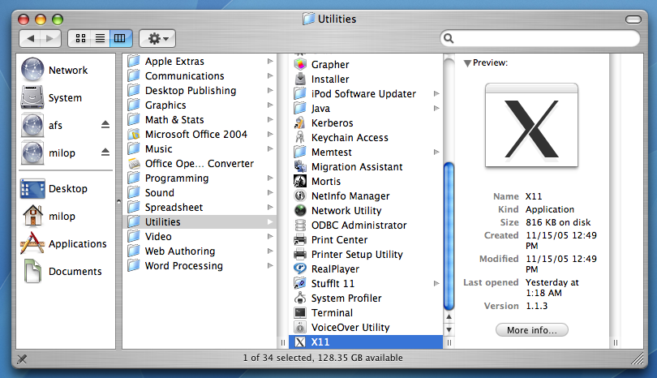
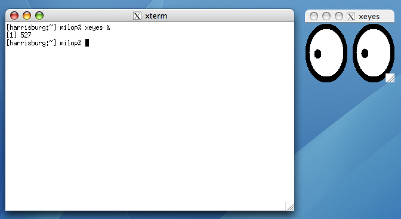

Computer Science Department |
 |
 |
 |
 |
 |
 |
 |
15-410 Macintosh Lab Instructions
These instructions will tell you how to remotely connect to a linux.andrew.cmu.edu from a Macintosh computer (such as those in the Wean 5203 lab) in a way that will let you run Simics and other Unix programs. Since you'll need to be able to work with Simics for Project 1, and the number of available Andrew machines is limited, hopefully these instructions will provide more options. They should also work for home Macintosh computers, although the performance of Simics can really suffer over slower links (i.e., home DSL).
These instructions will not detail how to work locally on these machines. There are a number of reasons for this:
- Simics doesn't support OS X. Even though lab machines can mount your afs space and reach the Simics binary, they won't execute on a Macintosh running OS X.
- Just as many of you have learned in p0, it's easier both for us and you if you work in the afs space from the offset and don't have the pain of doing a transfer later.
Hence we won't be working on the Macintosh directly, but instead be using it as a client to connect to a linux.andrew.cmu.edu machine. Please understand this distinction.
- Login
Get to a Macintosh lab and log in with your Andrew id and password.
- Open X11.app
X11.app is an implementation of the XFree86 X Window Server. This is a program which will let us display graphical programs run remotely on linux.andrew.cmu.edu, including Simics and emacs. To open X11.app, Navigate to /Applications/Utilities/ and open X11.app.
 - xterm
You should see a window open with a commandline and the name xterm at the top. If you've used Macintoshes before, it probably looks similar to the Terminal.app program you're familiar with. xterm is the standard terminal emulator for the X Window System, and like Terminal.app, it's usually used to display a shell. When X11.app boots, it opens one of these so you have a shell to work with. But X11.app is not xterm--xterm just one program the X Window Server can display. To see another, type in xeyes & at the prompt.
MIT must have been a boring place in 1984. The xeyes program has been loaded, and it's sending messages to and from the X window server that tells it how to display the eyeballs that follow the mouse. These messages are being sent on your local machine, but they can also be sent across the network, which is what we'll do in the next step. Close xeyes and continue.
- Connect to linux.andrew.cmu.edu
In the xterm window, type in ssh -X $USER@linux.andrew.cmu.edu and type in your Andrew password. The -X flag tells ssh to set up a tunnel to securely forward X Window messages to the Macintosh. You can now run X programs remotely and have them displayed on the lab machine. Try it with xcalc or 410/bin/410biff, a small program to alert you when there are 410 announcements. Don't close the xterm window though, or you'll lose your connection and any X programs running over it. (To run a program in the background so you can still type in the xterm, append an ampersand to the command. This is basic UNIX stuff you should know already and beyond the scope of this document.) If you ever need more xterms you can use the Terminal ⌘N option from the Applications menu or type xterm in the shell.
- Review docs
If you haven't read our documentation on your AFS space yet (how did you finish p0?) now would be a good time to "review" it. In particular, remember to aklog cs.cmu.edu. You might also want to add 410/bin to your path as detailed in the notes section of the Project 0 handout.
- Test Simics
The whole point of this exercise. Try running simics4 in your linux.andrew.cmu.edu shell (you did add the 410 executable directory to your path, right?). After some loading time and a license agreement, you should eventually see a large black window.
- Editors
You may also want to experiment with text editors to do your development work remotely on linux.andrew.cmu.edu. Popular ones are gvim and emacs. Both of these will run remotely over X.
You may want to drag the X11.app program to the Dock so you can run it easily each time you log in.
Going further...
- If you're getting errors about trusted X connections when opening remote programs, try passing -Y to ssh instead of -X. See man ssh
- By default on booting, X11.app runs /etc/X11/xinit/xinitrc to pick starting programs. But if you have a .xinitrc in your home directory on the Macintosh, it will use that instead. For example, an ~/.xinitrc might look like:
- xterm -e ssh -Y $USER@linux.andrew.cmu.edu &
But you can be much more creative. Be sure to end the file with exec <some window manager>. quartz-wm is the default Macintosh look-and-feel one.
exec quartz-wm - xterm -e ssh -Y $USER@linux.andrew.cmu.edu &
As usual contact if you're having problems.
[Last modified Tuesday January 26, 2010]